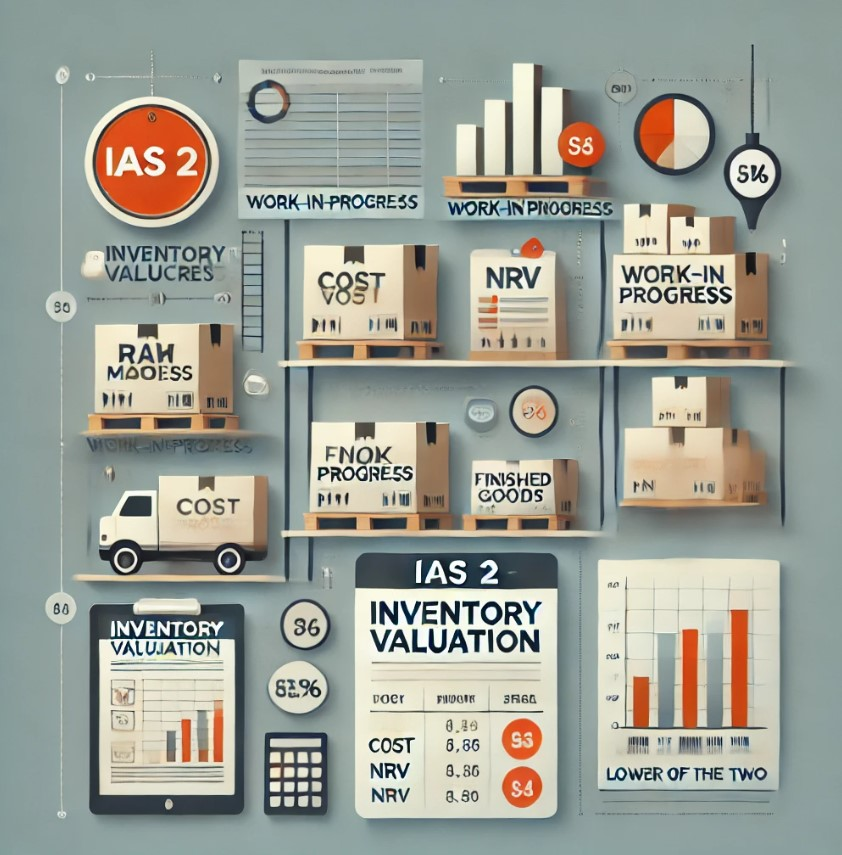

Inventory Under IAS 2 – Valuing What Truly Matters
Why don’t people earn more?
Because their inventory is misvalued. Or worse, misunderstood.
Welcome to the world of IAS 2 – Inventories, where clarity meets compliance and stock becomes strategy.
IAS 2 is more than a rulebook — it’s a mindset.
It demands that businesses present their inventory truthfully and logically. Compliance with IAS 2 reflects operational maturity and financial transparency. It’s not just about figures, it’s about faith in your financials.
Understanding IAS 2: Inventories as a Financial Pillar
Inventory, for many businesses, is a significant asset on the balance sheet. It includes goods held for sale, materials to be used in production, and items in the manufacturing process. The way inventory is accounted for has a direct influence on reported profits, asset values, and strategic decision-making.
IAS 2, issued by the International Accounting Standards Board (IASB), provides guidance on how to account for inventories, ensuring they are measured and presented reliably and consistently.
The standard prescribes:
- Methods to determine the cost of inventories
- Recognition as an asset
- Valuation at the lower of cost and net realizable value (NRV)
It’s more than just a compliance requirement—IAS 2 enables businesses to manage profitability, cost efficiency, and reporting credibility.
Scope of IAS 2
IAS 2 applies to inventories such as:
- Finished goods held for sale
- Work-in-progress (WIP)
- Raw materials and consumables used in production
Excluded from Scope:
- Construction contracts (covered under IFRS 15)
- Financial instruments (covered under IFRS 9)
- Biological assets related to agricultural activity (covered under IAS 41)
Cost of Inventories: What to Include and Exclude
The cost of inventories includes all expenditures incurred in bringing them to their current location and condition.
Included in Cost:
- Purchase costs: Including purchase price, import duties, and handling charges (net of recoverable taxes)
- Conversion costs: Direct labor and allocation of fixed/variable manufacturing overheads
- Other costs: Only if they are directly attributable to the acquisition or production
Excluded from Cost:
- Abnormal waste of materials, labor or other production costs
- Storage costs (unless they are necessary in the production process)
- Administrative overheads unrelated to bringing inventories to their location/condition
- Selling and distribution costs
- Interest and borrowing costs (unless they meet capitalization criteria under IAS 23)
Net Realizable Value (NRV): A Key Measurement Principle
Inventories are measured at the lower of cost and NRV to prevent asset overstatement and profit inflation.
NRV = Estimated Selling Price – Estimated Costs to Complete – Estimated Costs to Sell
Common Scenarios Where NRV < Cost:
- Obsolete technology or fashion goods
- Damaged inventory
- Price declines due to market conditions
- Excessive stock held beyond expected turnover period
When such circumstances arise, write-downs must be recognized, and reversals are allowed if NRV subsequently increases (limited to the amount of the original write-down).
Cost Formulas Under IAS 2
IAS 2 provides flexibility in applying cost formulas depending on the nature of the inventory.
Permitted Methods:
- Specific Identification – for unique or specially segregated inventory
- FIFO (First-In, First-Out)
- Weighted Average Cost
Note:
- LIFO (Last-In, First-Out) is not permitted under IAS 2.
Consistency in the chosen method across periods is crucial unless a change results in better presentation of financial information.
Disclosure Requirements
Transparency is a core principle of IFRS. Under IAS 2, entities must disclose:
- The accounting policies used for inventory valuation
- The cost formula(s) used
- The carrying amounts of inventories by classification (e.g., raw materials, WIP, finished goods)
- Inventories measured at NRV
- The amount of any write-downs and reversals
- Circumstances leading to the write-down or reversal
Practical Challenges in Implementation
Even with clear guidelines, real-world inventory accounting presents complexities:
- Identifying slow-moving or obsolete stock: Regular stock aging and review mechanisms are essential.
- Overhead allocation: Fixed production overheads must be allocated based on normal capacity.
- Inflation or deflation in input costs: Inventory must reflect actual cost or NRV, not market speculation.
- Costing consistency across subsidiaries: Uniform methods are required in consolidated reporting.
- Inventory held on behalf of others: Risks and rewards must be assessed before recognition.
Beyond Accounting: Strategic Importance of IAS 2
Accurate inventory accounting affects more than just compliance—it plays a role in:
- Profitability analysis: Overvaluation can inflate profit margins
- Tax planning: Write-downs impact taxable income
- Liquidity ratios: Inventory is a key component of current assets
- Banking covenants: Many loans have covenants tied to inventory value
- Investor confidence: Transparent inventory valuation builds stakeholder trust
In a data-driven era, the valuation of inventory reflects operational efficiency and strategic foresight.
Final Thoughts
IAS 2 is more than a measurement standard—it is a lens through which business performance is judged.
Inventory is dynamic. It moves, ages, gains, or loses value. Proper tracking and valuation ensure that this movement is captured truthfully in financial statements.
In global and complex supply chains, misjudging inventory can distort everything—from gross margins to cash flows. With IAS 2, businesses gain a structured, fair, and comparable framework to report inventory — turning stock into insight and compliance into confidence.
Inventory is not just stock. It’s financial credibility waiting to be revealed.
Account for it with the precision it deserves.